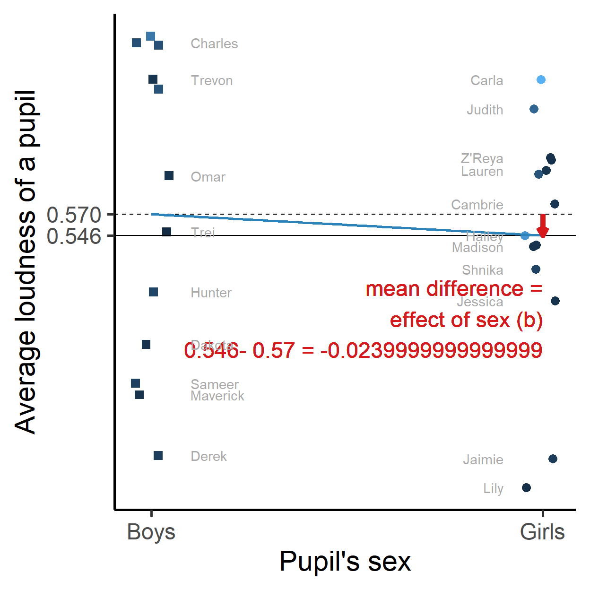

We have (fictional) data on what 26 pupils are doing during a 30 minutes break.
The below network picture shows part of this information:
What we want to know:
Eyeballing the evolving network does not give us easy answers to these questions. There is just too much information. Let us use statistical analysis to answer these questions.
If we apply statistical analysis, we basically believe:
For example, we believe that we can measure and compare voice loudness, pupil’s sex, and pupil’s ADHD score.

Each of the above plots compares pupil’s average voice loudness to a background characteristic of the pupil: pupil’s sex (left) and ADHD score (right).
If we want to predict average voice loudness, we call this the dependent or outcome variable. Variables that we use to predict (sex, ADHD score) are called independent or predictor variables.
Sex is measured with two categories:
0) with average loudness score 0.57 (on a loudness scale from 0 to 1);1), average loudness score is 0.546.If we look for systematic differences, we compare the mean (average) scores between boys and girls.
We call the difference between the two means (-0.024) the effect of sex on loudness. Girls are slightly less loud than boys during this break.
ADHD score is measured on a scale from 0 to 7.
For systematic differences in loudness, we look at the consequences of a one unit change in ADHD:
A one unit increase in ADHD scores predicts that voice loudness increases by 0.043.
Is this a lot?
The straight blue lines in the plots are called regression lines.
How do we get a regression line?
If the variable that we want to predict is numerical (real numbers, not a set of category codes), we can use the lm() function to estimate a regression line (regression model).
# Estimate a regression model with lm() and save the results in my_first_model.
# Use the data set loudness_average, which contains variables:
# - ID: pupil's ID (sequential) number,
# - label: pupil's name,
# - avg_loudness: pupil's average voice loudness during the break,
# - sex: pupil's sex
# - ethnicity: : pupil's ethnicity,
# - adhd: pupil's ADHD score.
# R is case-sensitive!
# Estimate the regression model.
my_first_model <- lm(avg_loudness ~ adhd, data = loudness_average)
# Show the results with the summary() function.
summary(my_first_model)Wow, those are a lot of numbers!
adhd,Estimate in this row (the unstandardized regression coefficient, b);Excercises
+ sign.##
## Call:
## lm(formula = avg_loudness ~ sex + adhd, data = loudness_average)
##
## Residuals:
## Min 1Q Median 3Q Max
## -0.25997 -0.10727 0.03839 0.10279 0.18302
##
## Coefficients:
## Estimate Std. Error t value Pr(>|t|)
## (Intercept) 0.51288 0.04784 10.720 2.03e-10 ***
## sex -0.03668 0.05616 -0.653 0.5202
## adhd 0.04421 0.01907 2.318 0.0297 *
## ---
## Signif. codes: 0 '***' 0.001 '**' 0.01 '*' 0.05 '.' 0.1 ' ' 1
##
## Residual standard error: 0.1421 on 23 degrees of freedom
## Multiple R-squared: 0.1946, Adjusted R-squared: 0.1246
## F-statistic: 2.779 on 2 and 23 DF, p-value: 0.08297In the summary of a regression model, you encounter the column Pr(>|t|):
Statistical significance is the most popular and probably worst understood concept in statistics.
For understanding the significance test, we can look at the confidence interval of an effect.
# Again, estimate a regression model with lm() and save the results in my_first_model.
my_third_model <- lm(avg_loudness ~ sex + adhd, data = loudness_average)
# Use function confint() to get the confidence intervals of the effects.
confint(my_third_model, level = 0.95)confint() gives us the lower limit (column 2.5 %) and upper limit (column 97.5 %) of the intervalThe plausible values for the effect of sex on voice loudness:
The plausible values for the effect of ADHD score on voice loudness:
So, the meaning of statistical significance: